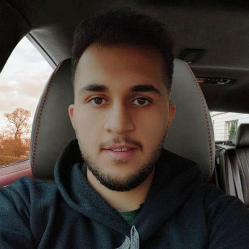

Software Engineer
Software Engineer with 6 years of professional experience and a strong foundation in C/C++, object-oriented design, and systems thinking. Hands-on experience building desktop applications with C++, Qt Quick, and QML, including a full chess engine with bidirectional C++/QML integration, advanced game rules, file persistence, and Linux/Windows packaging.
Solid background in software architecture (OOP, design patterns, modular systems, clean code) and competitive programming. Comfortable delivering complex features end-to-end, writing maintainable code, and collaborating in Agile teams. Also experienced with backend stacks (PHP/Laravel, Python) and modern tooling (Git, CMake/qmake, Docker, Linux).
Enthusiastic about performance, reliability, and problem-solving — continuously sharpening algorithmic and engineering skills through contests and real-world projects.
Branch: Computer Engineering
Institute/University: Islamic Azad University, Science and Research Branch
GPA: A
Top-ranked computer science in the Middle East
Branch: Computer Engineering
Institute/University: Bu-Ali Sina University
GPA: A
Graduated top of class (1/55)
Top-ranked computer science in the Middle East
MCI
Tasks and Achievements
Project: SOAR & VMS Platform for MCI (Hamrah-e-Avval) — Outsourced
Tools and technologies used: PHP, Laravel, MySQL, Redis, Docker, Linux, Vue.js, Vuetify, Swagger, PHPUnit, Apache, npm, Microservices, Jira, Confluence.
Langeek
Tasks and Achievements
Tools and technologies used: Python, PHP, Laravel, Symfony, MySQL, Redis, Docker, Linux, React, TypeScript, Redux, Doctrine ORM, TailwindCSS, JSX/TSX, ElasticSearch, RabbitMQ, NextJS.
Bu-Ali Sina University
Tasks and Achievements
Tools and technologies used: PHP, Laravel, Neo4j, Docker, Linux, React, TypeScript, TailwindCSS.
Aazem
Tasks and Achievements
Tech stack: PHP, Yii, JavaScript, HTML/CSS, jQuery, Docker, Linux
National Elite Foundation
Tasks and Achievements
Tech stack: Python, Django, JavaScript, HTML/CSS, Pandas, NumPy, Matplotlib, Docker, Linux
Self-Employed / Freelance
Tasks and Achievements
Tech stack: PHP, WordPress, vBulletin, HTML/CSS, Bootstrap, JavaScript
For: University courses
A fully functional desktop chess application written in C++ and Qt Quick/QML. Implemented an OOP game engine (pieces, board, players), advanced rules (check/mate, castling, en passant, promotion, undo), C++↔QML bridging with Q_PROPERTY and signals/slots, animated Material UI, file-based game persistence, and packaged builds for Linux and Windows. Course score: 173/100.
For: University practice
Domain modeling practice similar to IMDB, implemented in C++ with focus on OOP structure, data organization, and maintainable class design.
For: University courses
An educational platform similar to SabzLearn for online courses.
For: FOSS
A Laravel package for integration with the SMS.ir service and managing SMS services.
For: Self-Employed
A simple messaging platform with real-time chat features.
For: University courses
A job platform similar to JobVision for connecting employers and candidates.
For: Student association of university
An event management system for the student association.
For: FOSS
A multiplayer Mafia game with user management and game logic.
Link: https://quera.org/media/public/certificate/2a49865c95f0404e96d375e3298ddef2.png
Link: https://quera.org/contest/assignments/81560/scoreboard/